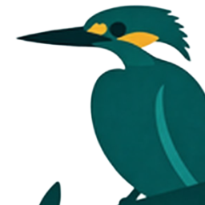

观鸟地区稀有鸟种榜 · 按省 / 市 / 区县，把本地记录最少的鸟种排在最前，附国家重点保护等级
正在汇总数据…
填入你在 中国观鸟记录中心 的用户名，会取回你全部鸟种记录， 与本地稀有鸟种排行比对，标出还没加新的鸟。
记录中心认为你当前的网络访问过于频繁。输入下面这张验证码即可立即解封（按 IP 记，同一网络下的设备一起解封）。 图片是空白？点一下图片可以「换一张」；若一直是空白，说明当前网络其实没被封，直接关掉重新查询即可。